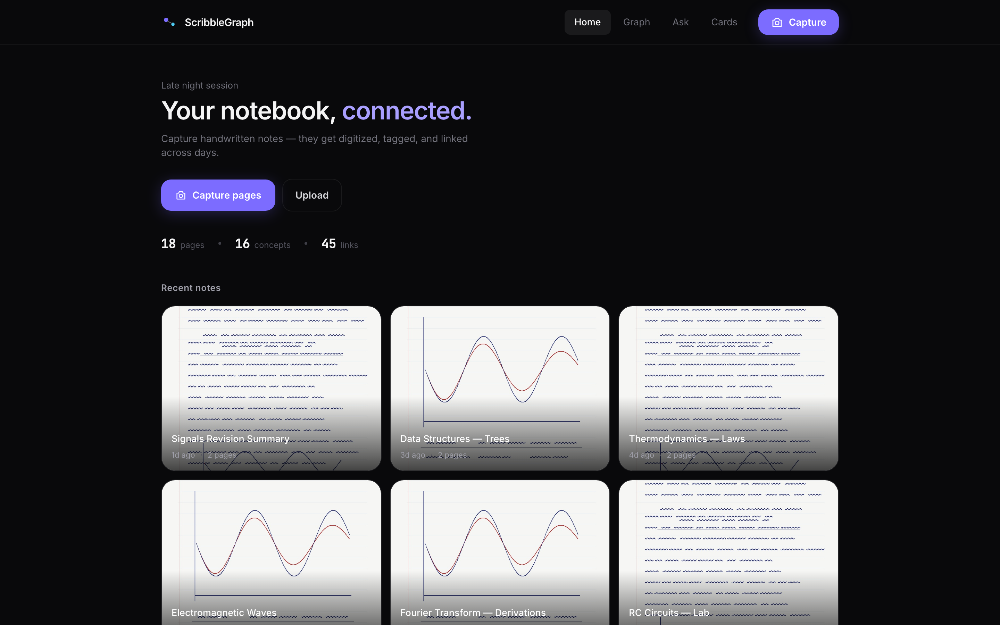
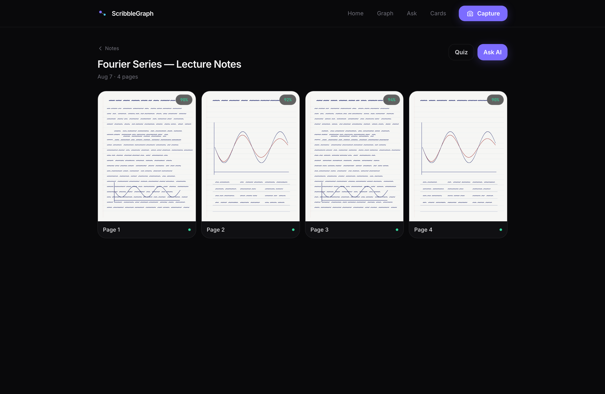
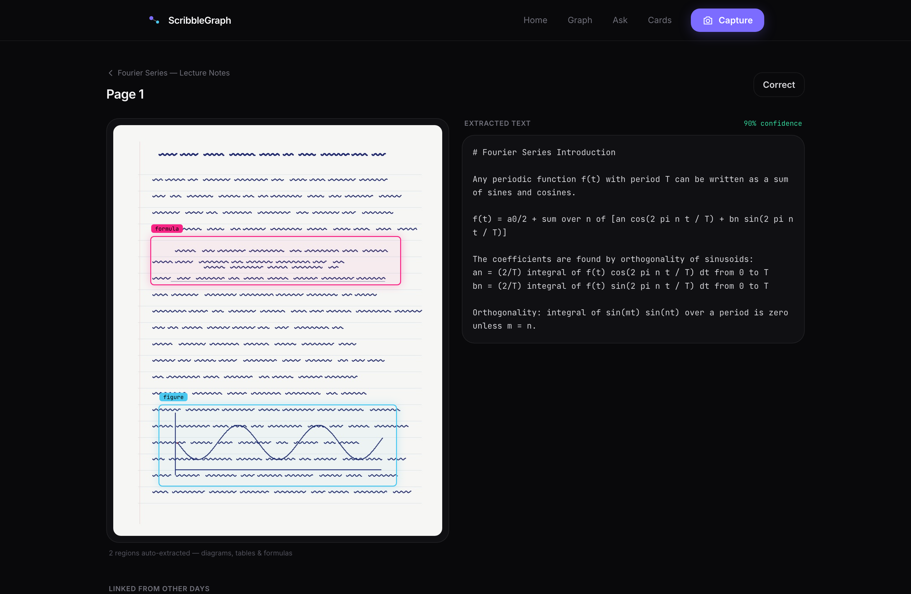
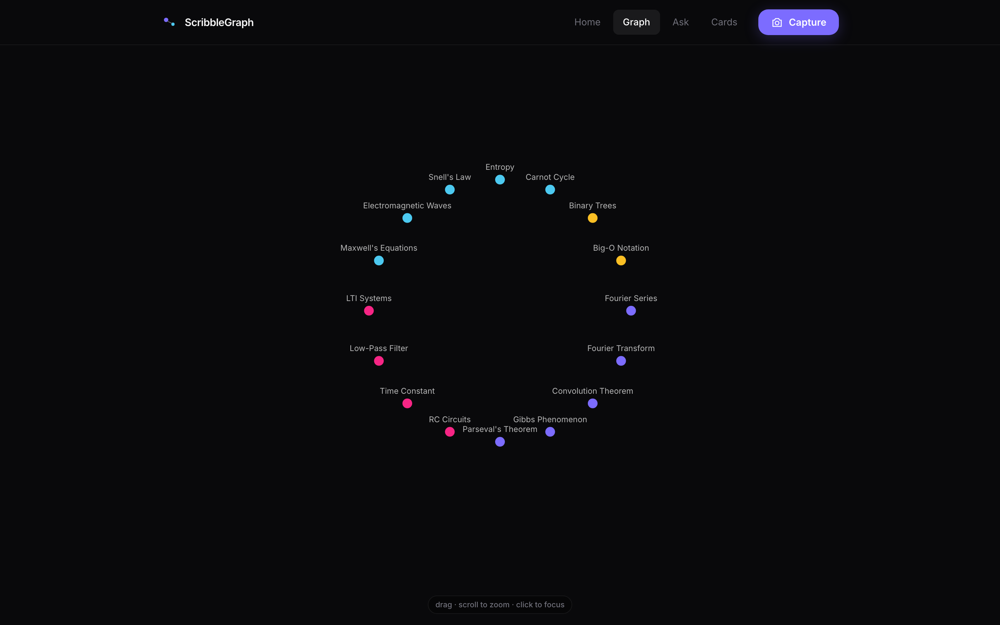
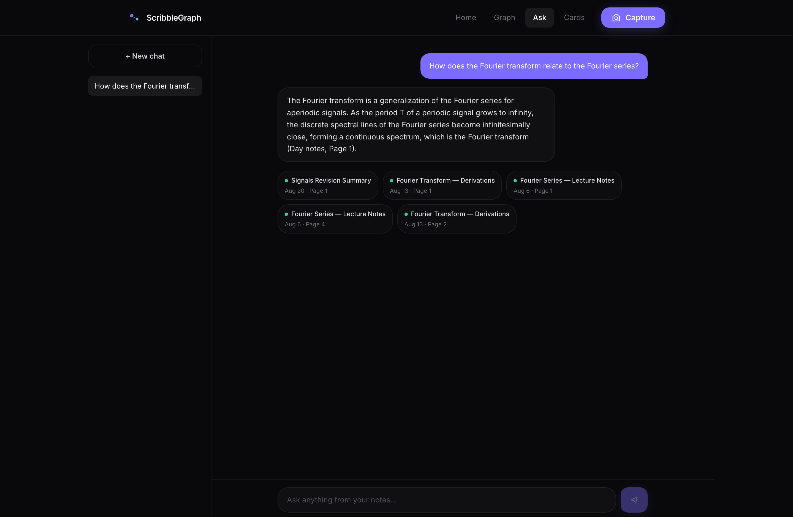
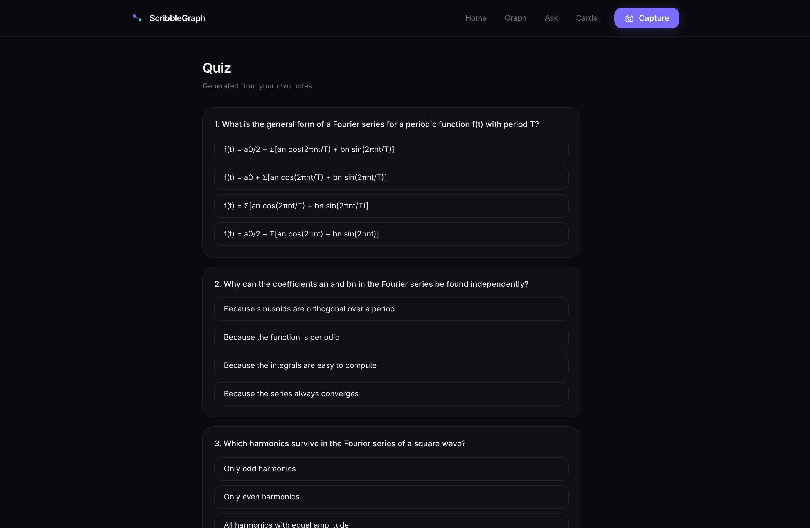
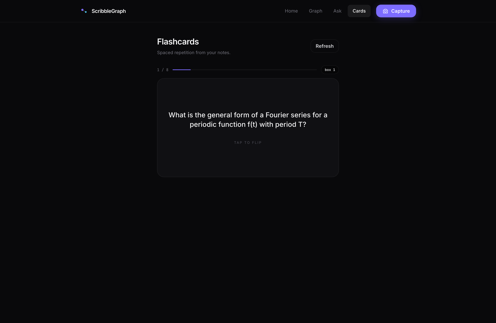

Turn handwritten notes into a smart, searchable knowledge graph — capture, digitize, link, and learn. Built for engineering students.
scribblegraph-api.youtopialabs.workers.dev
The problem
Your best notes are trapped on paper.
Derivations, diagrams, formulas — hours of work you can't search, can't back up, and forget in a week. Old topics never connect to new ones when you revise.
🔍Not searchablefind that formula from 3 weeks ago? good luck
🔗Not connectedrevision notes never link back to originals
⚠️Not safeone lost notebook = everything gone
The app · home
Everything in one place.

1Capture — start a scan from camera or photos2Your sessions — each capture becomes a titled note card3Stats — pages, concepts and cross-links found so far
Step 1 · capture
Just flip the pages. The camera does the rest.
📷Open cameraauto-finds the page in view
→
🎯Guided"move closer" · "hold steady"
→
✨Auto-snapeach page captured + counted
→
✅Doneone tap to upload & process
No buttons while scanning, no manual cropping. The app cleans up skew and glare, keeps the pages in order, then hands them to the AI pipeline.
Step 2 · process
Every page gets digitized in seconds.

1Live progress — each page shows its pipeline stage2OCR confidence — handwriting quality scored per page3Auto-titled — AI names the session from its content
Step 3 · read
Scan and text, side by side.

1Original scan — always kept, clickable regions2Extracted text — editable if OCR misreads a word3Related notes — cards linking to other days (next slide)
The magic ✨
It remembers what you wrote 2 weeks ago.
Each page is compared, by meaning, against every page you've ever captured. When today's notes cover the same idea as an old one, they get linked — automatically.
Aug 6 · lecture📐Fourier Seriesthe original derivation
→
Aug 13 · lecture📊Fourier Transformbuilds on the same idea
→
Aug 20 · revision🔁Summarylinks back to both, with match %
45 connections were found across 18 pages from 7 different days — imagine a full semester.
Step 4 · explore
Your whole subject, as a map.

1Nodes — concepts the AI found in your notes2Colors — grouped by subject (math, physics, circuits…)3Lines — concepts that appear together in your pages
Step 5 · ask
Ask your notes anything.

1Answer — written only from your own notes, not the internet2Sources — every answer cites the exact page and day it came from
Step 6 · study
It turns your notes into a quiz.

1Pick a session — questions are generated from those pages2Explanations — each answer is explained using your own notes
Step 6 · study
And flashcards that repeat what you forget.

1Tap to flip — question front, answer back2Spaced repetition — missed cards return sooner, "knew it" cards later
How it's built
Simple stack. Real product. Live today.
📸 js-document-autocapture — camera scanning🔍 Mistral OCR — handwriting to text🧠 Mistral embeddings — meaning matching☁️ Cloudflare Workers — API + pipeline🪣 R2 — page images🗄 D1 — notes database🔮 Vectorize — semantic search⚡ Queues — background processing
Open the link on your phone, capture a page, and watch it get digitized, linked and quizzable.